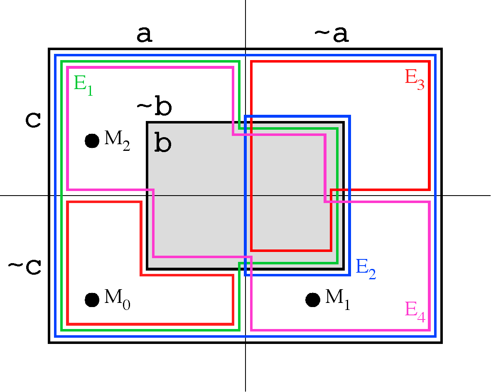

The Basic Process - Example

- Conjecture:
C = b
- Axioms:
E1 = a | b
E2 = b => a
E3 = (~a & (b | c)) | (a & ~b & ~c)
E4 = b | (a <=> c)
- E1 and E2 are superfluous
- Negated conjecture = ~b
|
|
| Selected
|
| Model
|
| Axiom
|
| 1
|
| { }
|
| { a, ~b, ~c}
|
| E4
|
| 2
|
| {E4}
|
| {~a, ~b, ~c}
|
| E1
|
| 3
|
| {E1, E4}
|
| { a, ~b, c}
|
| E3
|
| 4
|
| {E1, E3, E4}
|
| -
|
| -
|